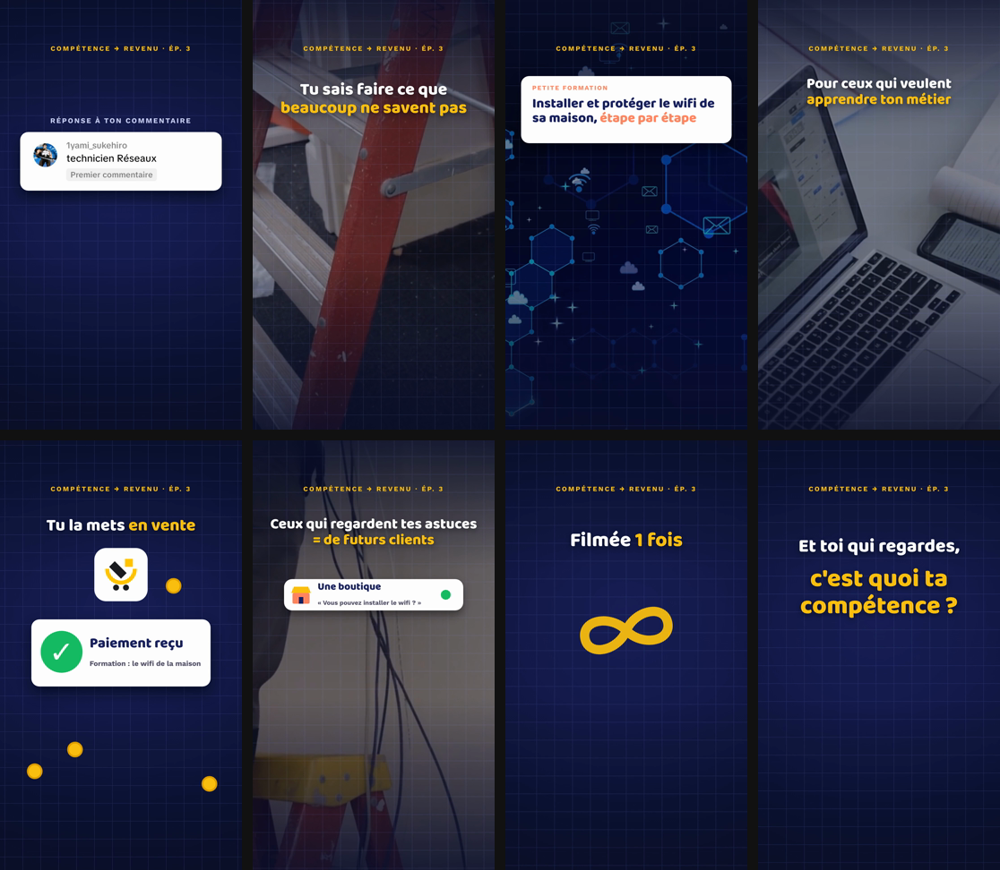
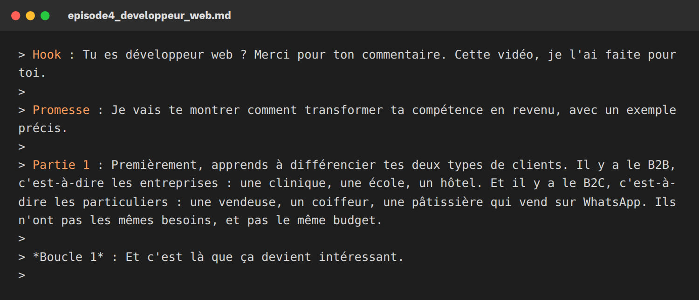
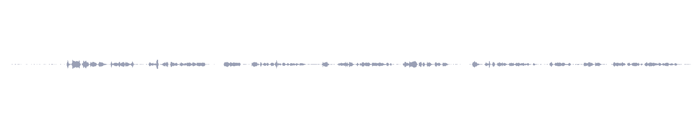
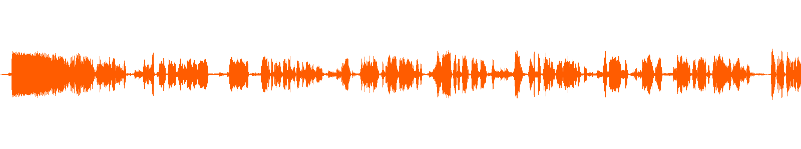
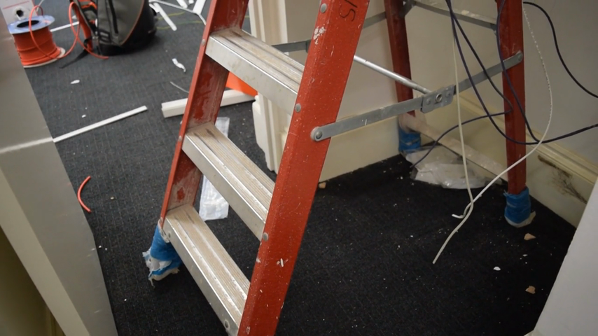
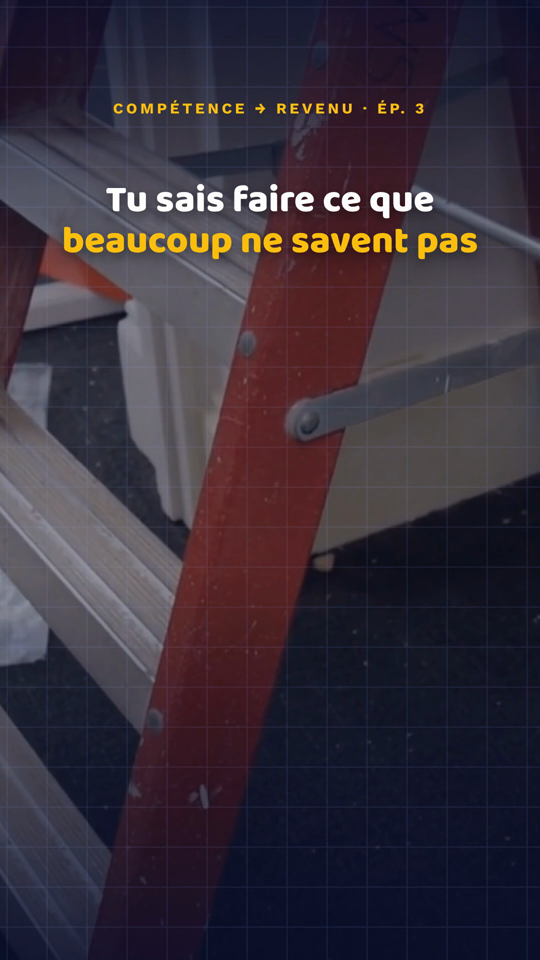
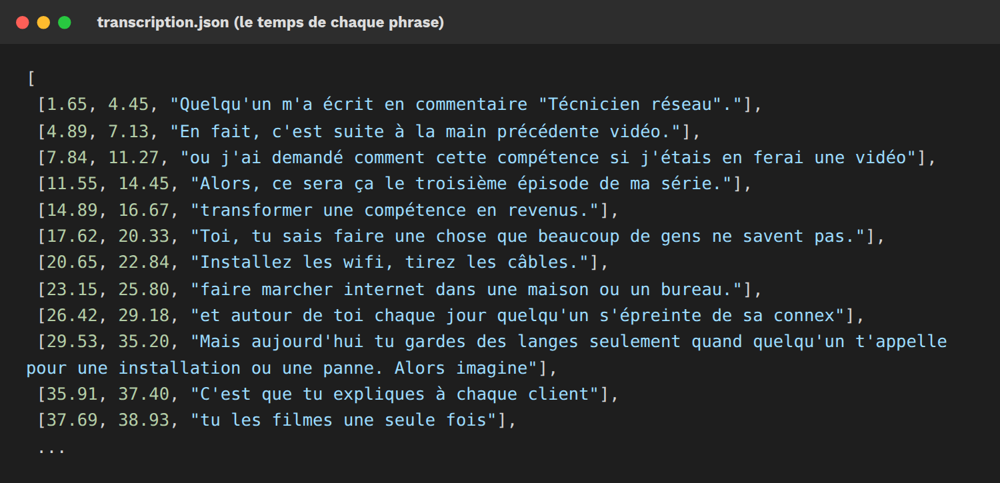
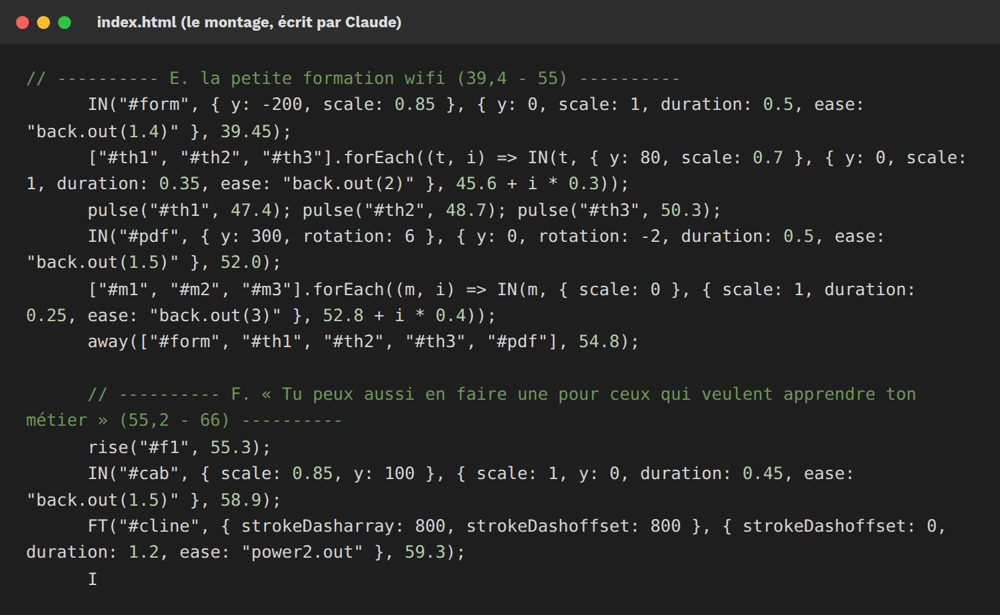
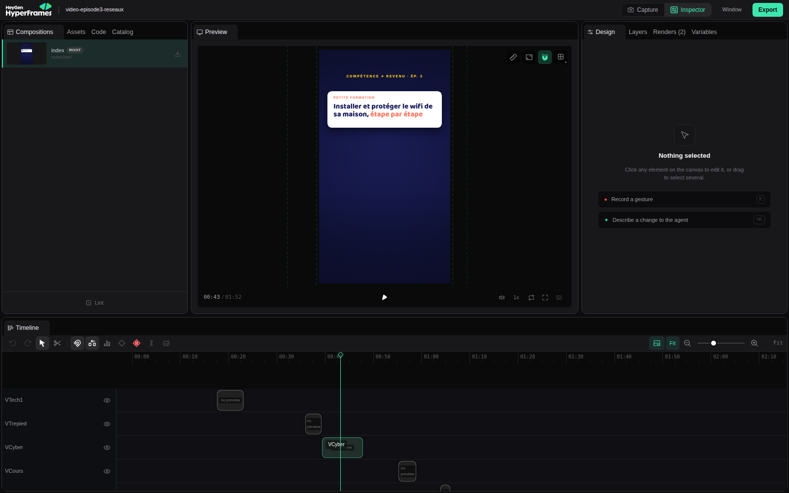

Crée des vidéos
motion design
avec l'IA
La méthode que j'utilise pour mes vidéos TikTok, étape par étape, avec les captures d'écran.

DigitalMikaelsonPas de blabla, juste ce qu'il faut faire, concrètement.
La méthode que j'utilise pour mes vidéos TikTok, étape par étape, avec les captures d'écran.

Une vidéo verticale avec ta voix, des animations, tes images, de la musique et des bruitages. Sans logiciel de montage. Tu donnes les éléments, l'IA écrit le montage et sort la vidéo.
Ce qu'il te faut
Les 6 étapes : 1. Le script · 2. Ta voix · 3. Tes images · 4. Tout donner à Claude · 5. Le son et le calage · 6. Vérifier et corriger
Toujours la même structure : Hook (l'accroche), Promesse, puis 3 parties qui finissent chacune par une boucle (une phrase qui donne envie de rester), et le CTA (ce que la personne doit faire).

Capture : le début d'un de mes scripts. Des phrases courtes, des mots de tous les jours.

Capture : ma voix brute. Du silence au début, un volume faible.

Après l'étape 5 : voix nettoyée, plus forte, musique et bruitages ajoutés.

L'extrait brut (horizontal)

Dans la vidéo : recadré en vertical, avec les animations par-dessus
Ouvre Claude Code (sur claude.ai/code ou dans l'application), relie-le à ton GitHub, puis envoie ton audio et tes images avec ce message :
Claude transcrit ta voix : il connaît la seconde exacte de chaque phrase. C'est ce qui fait que les images tombent pile au bon moment.

Capture : la transcription. Quelques mots sont mal compris, mais les temps sont justes, et c'est ça qui compte.

Capture : le montage, écrit en code par Claude. Chaque ligne = une animation à une seconde précise.
HyperFrames a un studio : la vidéo, la ligne du temps, chaque extrait à sa place. Demande à Claude : « Ouvre l'aperçu HyperFrames ».

Capture : le studio HyperFrames sur l'épisode 3 de ma série.
Regarde la vidéo jusqu'au bout. Puis demande les corrections avec la seconde précise. Des vraies demandes que j'ai faites :
Tu bloques à une étape ?
Écris-moi sur WhatsApp : +243 831 710 181. Envoie-moi une capture de là où tu bloques, je te réponds.